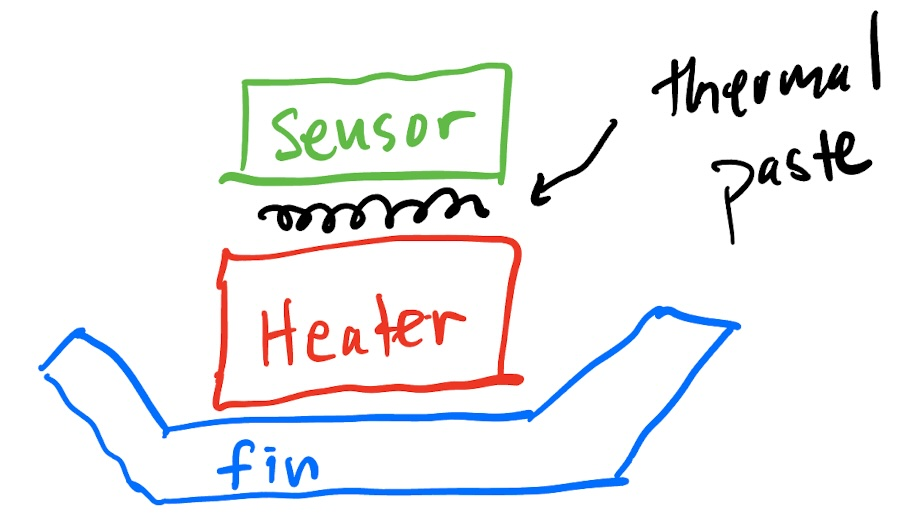

TCLab Mathematical Model#
We will use the TCLab as a motivating example for this workshop.
Temperature control lab#
The temperature control lab is an Arduino-based hands-on experiment for teaching dynamic modeling and process control developed by Prof. John Hedengren. At Notre Dame, we restructured our core undergraduate process control class around hands-on labratory assignments with the TCLab.
The TCLab board contains two heater plus temperature sensor assemblies. Using Python (or MATLAB), students can independently maninputate the electrical power to each heater and sense the temperatures.

System identification data#
Using the TCLab, we performed two system identification tests: step test and sine wave test. Below are the resulting data.
Step test#
import sys
# If running on Google Colab, install Pyomo and Ipopt via IDAES
on_colab = "google.colab" in sys.modules
if on_colab:
file = "https://raw.githubusercontent.com/dowlinglab/pyomo-doe/main/data/tclab_step_test.csv'"
else:
file = '../data/tclab_step_test.csv'
import pandas as pd
df = pd.read_csv(file)
df.head()
| Time | T1 | T2 | Q1 | Q2 | |
|---|---|---|---|---|---|
| 0 | 0.00 | 22.84 | 22.52 | 50.0 | 0.0 |
| 1 | 1.01 | 22.84 | 22.52 | 50.0 | 0.0 |
| 2 | 2.01 | 22.84 | 22.52 | 50.0 | 0.0 |
| 3 | 3.00 | 22.84 | 22.52 | 50.0 | 0.0 |
| 4 | 4.00 | 22.84 | 22.20 | 50.0 | 0.0 |
import matplotlib.pyplot as plt
ax = df.plot(x='Time', y=['T1', 'T2'], xlabel='Time (s)', ylabel='Temperature (°C)')
ax = df.plot(x='Time', y=['Q1', 'Q2'], xlabel='Time (s)', ylabel='Heater Power (%)')
Sine test#
if on_colab:
file = "https://raw.githubusercontent.com/dowlinglab/pyomo-doe/main/data/tclab_sine_test.csv'"
else:
file = '../data/tclab_sine_test.csv'
df2 = pd.read_csv(file)
df2.head()
| Time | T1 | T2 | Q1 | Q2 | |
|---|---|---|---|---|---|
| 0 | 0.00 | 24.45 | 24.13 | 50.0 | 0.0 |
| 1 | 1.00 | 24.45 | 24.13 | 55.0 | 0.0 |
| 2 | 2.01 | 24.45 | 24.13 | 60.0 | 0.0 |
| 3 | 3.01 | 24.45 | 24.13 | 65.0 | 0.0 |
| 4 | 4.01 | 24.77 | 23.81 | 70.0 | 0.0 |
ax = df2.plot(x='Time', y=['T1', 'T2'], xlabel='Time (s)', ylabel='Temperature (°C)')
ax = df2.plot(x='Time', y=['Q1', 'Q2'], xlabel='Time (s)', ylabel='Heater Power (%)')
Two-state mathematical model#
Using these data, we want to develop a science-based mathematical model for the TCLab. For simplicity, we will focus on a single heater and temperature sensor assembly.

We will define two states:
\(T_{H,1}\) is the temperature of the heater/fin assembly (°C)
\(T_{S,1}\) is the temperature of the sensor (°C)
Assumptions:
The two bodies are uniform temperature, i.e., we are neglecting any temperature gradients in the fin.
The sensor exchanges heat only with the heater, and heat transfer to the surroundings is dominated by the heat sink attached to the heater.
We can neglect radiative heat transfer.
We define the manipulated variable:
\(u_1\) is the power sent to the heater (% of max)
This motivates the following model:
The model has the following unknown parameters:
\(C^H_p\) is the heat capacity of the heater/fin assembly (J / °C)
\(C^H_p\) is the heat capacity of the sensor (J / °C)
\(U_a\) is the heat transfer coefficient from the heater/fin to ambient (W / °C)
\(U_b\) is the heat transfer coefficient from the heater/fin to the sensor (W / °C)
And the following known parameters:
\(\alpha P_1\) are constants for the TCLab (W / %)
\(T_{amb}\) is the ambient temperature (°C)
State space model#
Although not essential for this tutorial, we can write this model a a state space linear system.
The initial steady state is \(T_{amb}\). So let’s write the dependent variables as excursions from the ambient temperature.
Then divide by the heat capacities.
The two-state model can be rewritten using vectors to collect the states, inputs, measurable outputs, and arrays to collect the coefficients of the differential equations.
In other words, we can write the temperature control lab model as a state-space model
where the state space variables are the deviations of temperature from the ambient \(T_{amb}\)
and parameters are embedded in the arrays